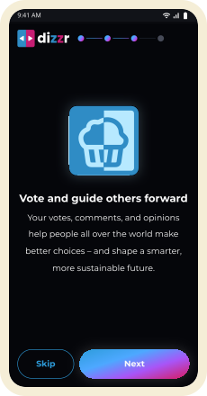
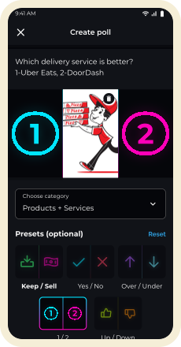
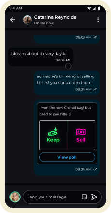
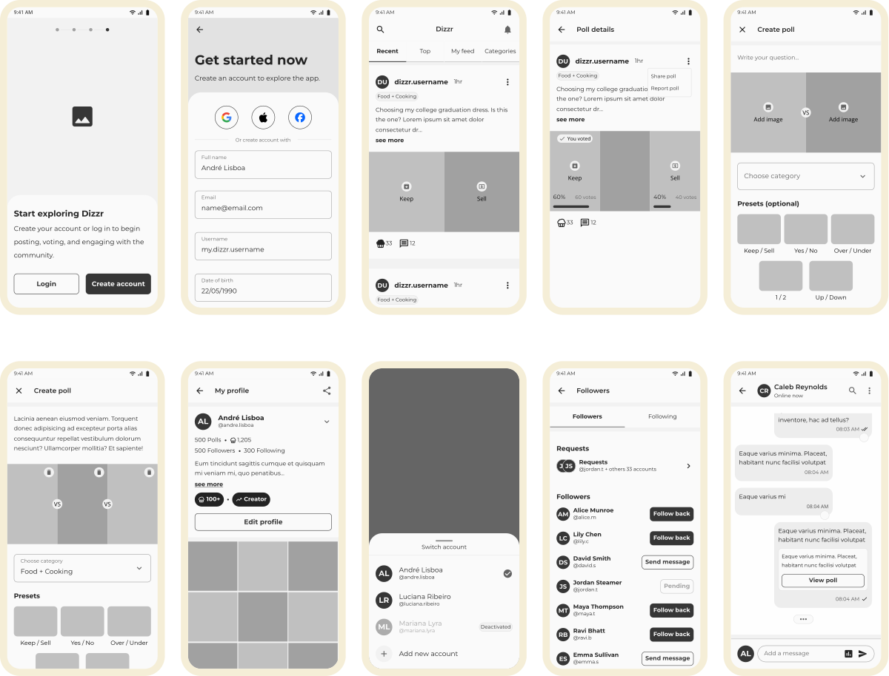
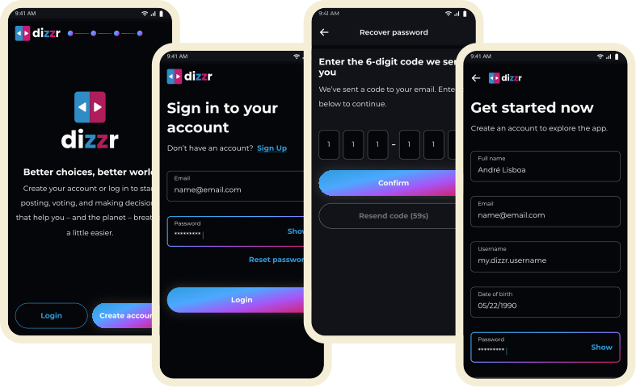
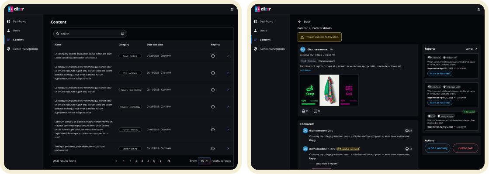
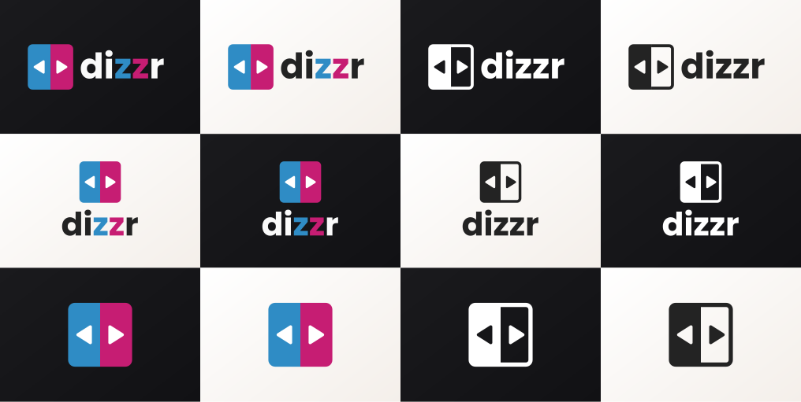
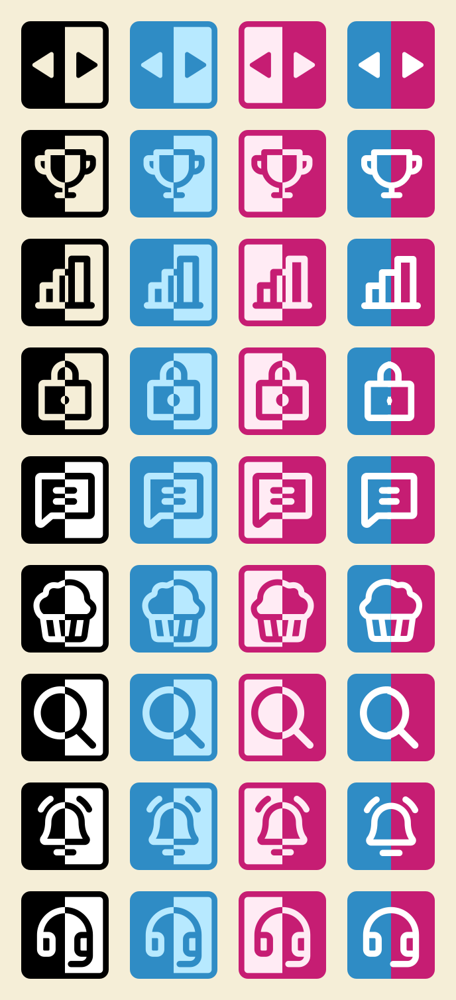

Dizzr

• Mobile App / Admin Web • 2026




Dizzr is a social network for polls. Users can publish open or pre-formatted polls to get fast feedback from the community, as well as share their opinions on various polls across their feed.
User personas

Alex, 24
The Casual Voter Looking for Quick Interaction
Alex uses social apps mainly during short breaks throughout the day. He prefers lightweight interactions instead of creating long-form content. Dizzr allows him to participate instantly by voting on polls, discovering opinions, and feeling part of conversations without needing to post frequently.

Maya, 29
The Creator Using Polls to Engage an Audience
Maya enjoys sharing opinions and starting conversations online. Instead of traditional posts, she prefers interactive formats that generate immediate feedback. Dizzr gives her a fast way to publish polls and view people responses in real time.

Daniel, 21
The Social Explorer Discovering Trends and People
Daniel enjoys discovering new perspectives and online communities. He uses Dizzr to explore trending questions, find interesting creators, and shape his feed through interaction rather than algorithms alone.
Lucia, 27
The Opinion Leader Building Personal Authority
Lucia enjoys expressing strong opinions and influencing discussions online. She doesn’t just consume content - she wants to shape conversations and become recognized inside communities. Dizzr allows her to position herself as a reference by consistently creating engaging polls and attracting followers through participation.
Wireframes

High fidelities

Authentication
Users log in with their email and password to access the poll feed directly. Alternatively, they can sign up by providing their name, username, date of birth, email, and password.
Feed & Polls
Users can view the poll feed and quickly vote by simply clicking the image of their preferred option. Upon voting, the details and results for each option are revealed.


Create poll
Users can create polls via the bottom navigation bar. They can select available presets and include images, as well as set the question, category, and options.
Admin web
Through the web admin dashboard, moderators can perform platform actions. It enables them to manage users, moderate content, access audit logs, and analyze app usage analytics.

Branding & Marketing assets



Prototype
Made by André Lisboa